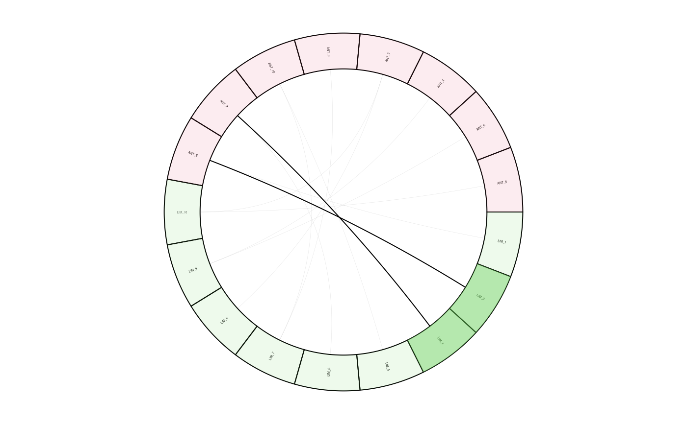

highlight.RdA function to add links and highlight sectors to an initialised
and plotted circlize plot with one track.
highlight(
groupname,
ind,
linkDf,
colour = NULL,
transparency = 0.4,
links = TRUE
)character vector containing "group" and "name" to
display that is a unique identifier of the features, "group" and "name" have
to be separated by "_" where "group" is the first and "name" is the
last element
numeric, indices which will be highlighted
data.frame, in each row there is information about
features to be connected
NULL or character, colour defines the
colours which are used for plotting, if `NULL` default colours are used
numeric, defines the transparency of the colours
logical, should links of unselected features be plotted
The function will update an existing plot by highlighting a specified sector and connected links.
Internal use for shinyCircos or outside of shinyCircos to
reproduce the figure.
data("spectra", package = "MetCirc")
## create similarity matrix
similarityMat <- Spectra::compareSpectra(sps_tissue[1:10],
FUN = MsCoreUtils::ndotproduct, ppm = 20, m = 0.5, n = 2)
rownames(similarityMat) <- colnames(similarityMat) <- sps_tissue$name[1:10]
## order similarityMat according to retentionTime and update rownames
simM <- orderSimilarityMatrix(similarityMat, sps = sps_tissue[1:10],
type = "retentionTime")
## create link matrix
linkDf <- createLinkDf(similarityMatrix = simM, sps = sps_tissue,
condition = c("SPL", "LIM", "ANT", "STY"), lower = 0.01, upper = 1)
## cut link matrix (here: only display links between groups)
linkDf_cut <- cutLinkDf(linkDf, type = "inter")
## set circlize parameters
circos.clear()
circos.par(gap.degree = 0, cell.padding = c(0.0, 0, 0.0, 0),
track.margin = c(0.0, 0))
groupname <- c(as.character(linkDf_cut[, "spectrum1"]),
as.character(linkDf_cut[, "spectrum2"]))
groupname <- unique(groupname)
## here: set indSelected arbitrarily
indSelected <- c(2,3)
## actual plotting
plotCircos(groupname, linkDf_cut, initialize = TRUE,
featureNames = TRUE, cexFeatureNames = 0.2, groupSector = TRUE,
groupName = FALSE, links = FALSE, highlight = TRUE)
## highlight
highlight(groupname = groupname, ind = indSelected, linkDf = linkDf_cut,
colour = NULL, transparency = 0.4, links = TRUE)
